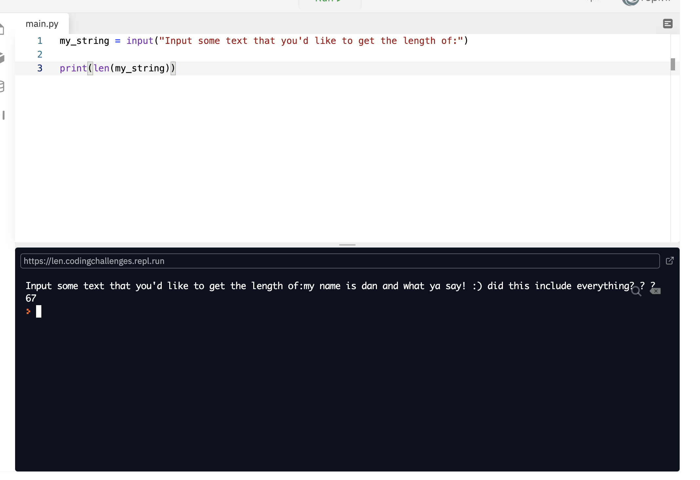
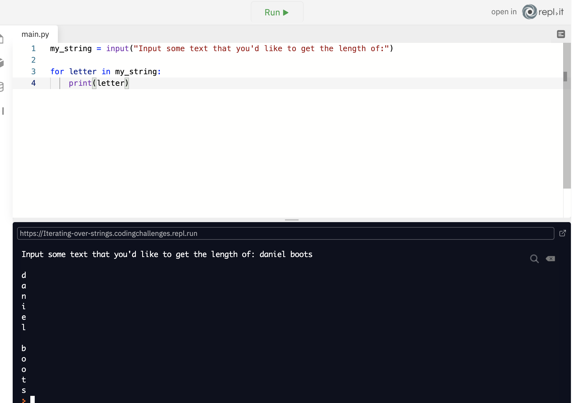
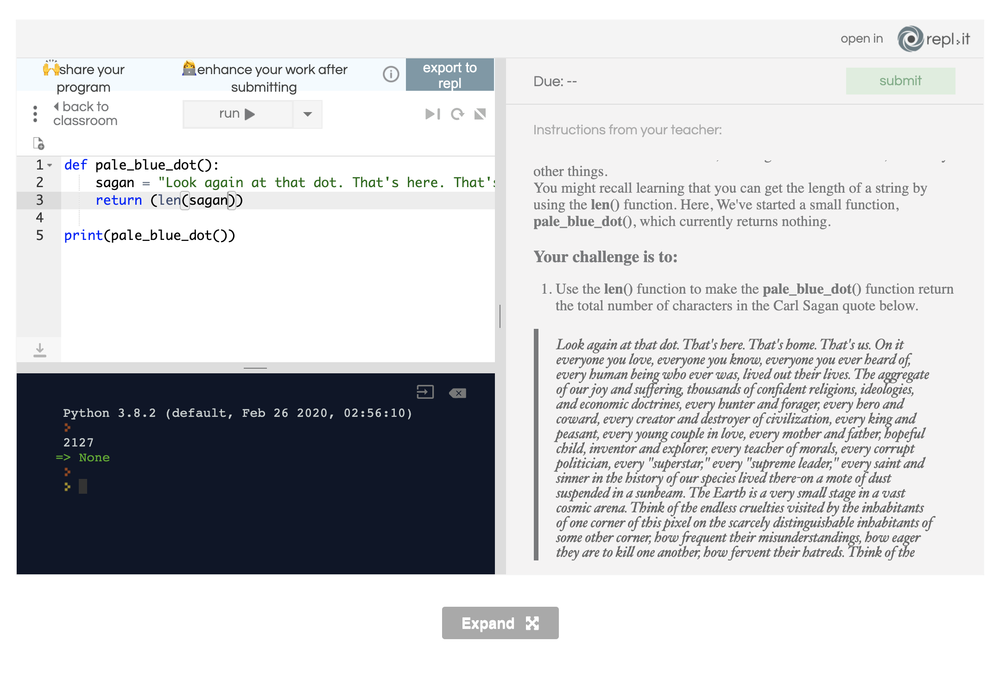
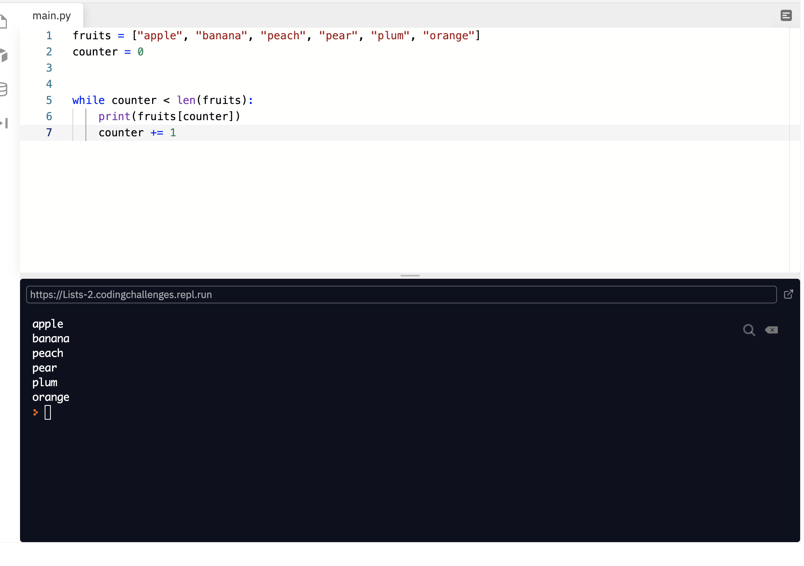
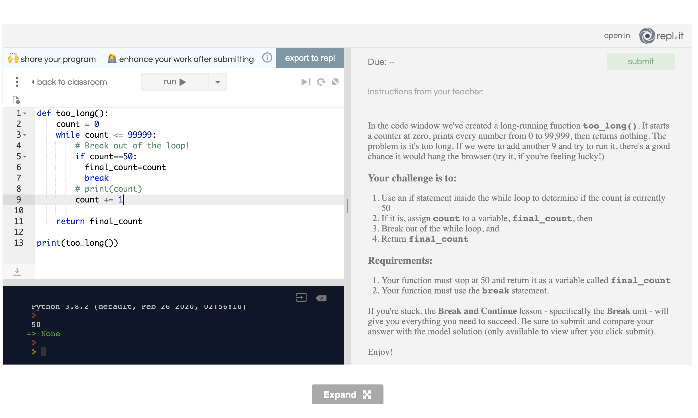
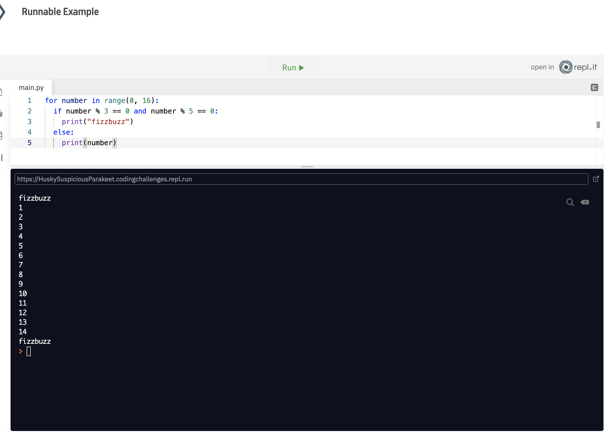
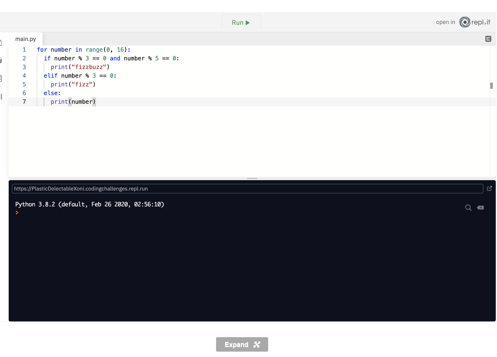

Notes page 4
We may need to break up our strings into smaller pieces
Lists are used to store a collection of variables. It comes in handy for when we wish to group more significant amounts of data. We’ve used quite a few lists already in this course. Strings are lists that are composed of characters, or char. Char is a type that is never comprised of more than a single letter or number. When we group many of these chars, we end up with a string, which is a type of list. Because a string is a list, there are many other things that we can do with it other than just use string methods. Firstly, we can get the length of a string by using the len() function. Let’s try that out below:
 Here we iterate over the string and print out each character.
In Python as well as many other programming languages, strings are iterable, meaning we can loop through them, character by character, and do things with each character! We can use this property of strings to do things like count the number of letters in a word, count the number of words in a sentence, rearrange letters and words, and many other things. You might recall learning that you can get the length of a string by using the len() function. Here, We've started a small function, pale_blue_dot(), which currently returns nothing. Your challenge is to: Use the len() function to make the pale_blue_dot() function return the total number of characters in the Carl Sagan quote below.
Provides the ability to access individual items in lists
When we have a collection of items stored in a list, but only require individual items, we use indexing to access them
When working with lists, we don’t have to work with lists as a whole. We can access each item in a list using indexing. Every item in a list has an index, and we can use that index to target specific items, or to access groups of items in lists. These items are usually referred to as elements. Let’s take a look at an example:

Here we’re asking the user to enter a word. Then we use [0] to get the first letter of the word, and then we print it out. However, if the user just hits the enter without typing in a word, the string will be empty, and Python will say “IndexError: string index out of range.” The reason for this is the list doesn’t have any indices because it’s empty.
Provides the ability to access individual items in lists
When having a collection of items stored in a list, but only require individual items, we use indexing to access them
If we have a string with the value of “Hi” and want to access the letter ‘i’, we would need to use [1].
word = "Hi" print(word[1]) returns i
The above example will achieve just that! If we were to try to use [2] in this case, we would get another “IndexError: string index out of range.”
Indexing - Required: In the string sequencing challenges, you used the len() function to determine the length of some long strings of text, among other things. We can also access specific characters in a string by using indexing or items in a list. For this challenge we've defined a small function, index_function(), which currently returns an empty list. Your challenge is to: Assign the string, "Fundamentals" to a variable, index Use indexing to make the index_function() return the list provided, which should contain, in the correct order. 1st the letter at index 4 of the variable index, 2nd using negative indexing, the fourth last letter of the variable index. Requirements: The returned list should contain the two letters obtained by indexing You must use indexing, items must be returned in the correct order as stated above.

Provide a means of grouping pieces of similar information together
When we have a group of items, we can store them in a list, so we have them all in the one place
Now that we have a bit of understanding of what lists are, let’s take a look at what it’s like to create some lists, instead of just using range() and strings. In the below example, we’ll generate a list of fruit, and then we’ll print each element out to the console.
Here we’ve just created a list called fruits. It is a list of strings separated by commas (,). This comma-separated list of strings is enclosed in a pair of square brackets. At the beginning of the for loop cycle, the for loop will grab the next element (in this case fruit) in the list and will then print it out. Once that cycle is complete, or there are no more statements inside the for loop, the next iteration begins and the next fruit is pulled from the list of fruits.
iterating through list using while loop
Here is a slightly more elaborate example using a while loop and list indexes. Firstly, we have our fruits list which is the same list of fruits that we used before. Next we’ve declared a variable called counter. Each time we run this while loop, we’ll increase the value of this by one. After this, we have our while loop. This while loop checks to see if the counter is less than the length of fruits. This way, every time the counter variable is increased, it will map directly to an index that’s contained within the fruits list.
Let’s take a look at the example below: Element “apple” “banana” “peach” “pear” “plum” “orange Index 0 1 2 3 4 5 Instead of using the actual number inside the square brackets, we can just use the counter variable as the index value. After that, we just clock up our counter by using the arithmetic operator to add one to the existing counter variable, and the process starts again, so long as the condition in the while loop is true!
solution

break allows us to break out of a loop
Sometimes we might need to break out of a loop at a certain point, usually determined by some conditional check
In Python, we can break out of and continue running iterations in loops. The break keyword will stop executing the list, and the continue keyword will skip ahead to the next iteration. For example, if we only want to print out two of the elements in our list, then we can use the following:
In this case, we’ve implemented an if statement at the end of our while loop to check to see if the element is peach. If this true, then we use the break keyword to break out of the loop. Because we don’t use indexing inside for loops, the implementation here is slightly different.
same example We have the same example here, only this time we’ve used a for loop instead of a while loop.

Break - Required: Being able to break out of a loop is a vital part of understanding iteration. Sometimes you'll make a mistake in your coding and accidentally create an infinite loop - a loop that runs forever - or perhaps you'll just need to exit a loop after a specific number of iterations. In all these situations, the break statement will do the job for you. In the code window we've created a long-running function too_long(). It starts a counter at zero, prints every number from 0 to 99,999, then returns nothing. The problem is it's too long. If we were to add another 9 and try to run it, there's a good chance it would hang the browser (try it, if you're feeling lucky!)
our challenge is to: Use an if statement inside the while loop to determine if the count is currently 50 If it is, assign count to a variable, final_count, then Break out of the while loop, and Return final_count
did this all on me own! :) pow
continue keyword Allows us to skip an iteration in a loop
Sometimes we might need to skip an iteration in a loop at a certain point, usually determined by some conditional check
In this example, we’ve decided that we don’t want to print out peach. As such, inside of our while loop, we have a condition that will check to see if the element is equal to “peach”. If this is true, then we use the continue keyword. Once the continue keyword is executed, this stops the current cycle and will continue straight into the next cycle.
In the last few challenges you practiced breaking out of loops by using the break statement. Sometimes we might just want to skip an iteration or two, to allow our loop to execute on most items in a list, but not all of them. You might recall using the continue statement to to this. In the code window we've defined a small function, evens(), which does the following: Defines a variable, even_numbers, which is an empty list Defines a variable , all_numbers, which is a list that includes all numbers from 0 to 100 (This is a list comprehension - a handy shorthand for creating a list - by the way! Google it!) Uses a for loop to iterate through the all_numbers list, and append each number to the even_numbers list Returns the even_numbers list The problem is that it appends all numbers to the even_numbers list and returns a list of all the numbers, not just the evens.
Your challenge is to: Use an if statement in the for loop to determine if the current number is odd (you may want to review the modulo operator and the not operator for this purpose) If so, use the continue statement to skip it and move to the next iteration Ensure that the function returns the true list of even_numbers Requirements: Your function must return a list Your function must use the continue statement Your function must return the true list of even numbers, without modifying the return statement.
the solution to this problem is to use the modulo operator which allows us to continue (ie skip over the odd number, we can use the modulo %2==1 to achieve this

Similar to the traditional “Hello, World” application, another motif that we see in the world testing out new concepts in programming languages is print out an old folk song called 99 Bottles Of Beer. Every verse of this song is the same, aside from the number of bottles of beer that are on the wall! 99 bottles of beer on the wall, 99 bottles of beer. Take one down, pass it around, 98 bottles of beer on the wall… 98 bottles of beer on the wall, 98 bottles of beer. Take one down, pass it around, 97 bottles of beer on the wall… This pattern repeats itself all the way down to 0. So how would we go about singing this song in Python? Well, it’s pretty simple!

First, we just need a for loop. Our for loop will iterate through the range of numbers between 99 and 0, stepping in -1. Each iteration of the loop will get closer to 0. On the following two lines we just declare two string variables (line_one and line_two). Instead of including the number of bottles of beer in the string, we’ve used placeholders ({0}). And line_two has the newline escape character at the end so we’ll have a clear line break between the verse. Then we just print out line_one, which is formatted to include the number from the current iteration of the loop. On the first cycle, this will give us: 99 bottles of beer on the wall, 99 bottles of beer. Then we print out the line_two, which will contain the current number of the iteration – 1 which, on the first iteration, will give us: Take one down, pass it around, 98 bottles of beer on the wall… This pattern will then continue all the way down to 0. See if you change this to print an alternative last verse if the number is equal to zero – No more bottles of beer on the wall, no more bottles of beer. We’ve taken them down and passed them around; now we’re drunk and passed out!
Prints out different words based on certain conditions
FizzBuzz is a common task that developers are asked to complete as part of technical interviews
Fizzbuzz is one of the single most infamous coding challenges that developers are faced with in technical interviews. The idea of fizzbuzz is relatively simple; however, it’s usually the simplicity of this problem that catches out even some of the most battle-hardened developers. The purpose of fizzbuzz is to iterate over a list or range of numbers, and we end up some different choices that must be made depending on the value of that number. If the number is divisible by 3, then we print out fizz. If the number is divisible by 5, we print out buzz. If, however, the number is divisible by both 3 and 5, print out fizzbuzz. Otherwise, we just print out the number. To accomplish this, we need to start with a for loop that iterates over a range of numbers. Any range will do, so long as it at least reaches the number 15, as 15 is the first number in the numeric sequence that is divisible by both 3 and 5. Let’s take a look at how it looks.
for number in range(0, 16): print(number) 0 1 2 fizz 4 buzz fizz . . . fizzbuzz
So to start off, we’ve created a range from 0 to 15 (remember that the number 16 isn’t counted here). After that, we just print out the number. We’ll deal the most complicated part of this first, and that’s checking to see if a value is divisible by both 3 and 5. To do this, we just use a simple if statement with an and condition.
To check to see if a number can be divided evenly by 3, we need to use the modulo operator. If the modulo operator returns a value of zero, then that number is evenly divisible by 3. The same applies to 5. We just use the and operator here to say that both of these conditions must be true to execute the code in the if block. Notice that we’ve also moved our initial call to the print function into the else block. This way we can ensure that if the conditions in the if block aren’t met, then we’ll print out the number.
So far we’ve managed to print out the fizzbuzz if the number is divisible by 3 and 5, and then we print out the number if it’s not. That’s two parts of the criteria down. Next, we’ll update it to print fizz. For this, we just need an elif to see if the number is divisible by 3.
So if the number isn’t divisible by 3 and 5, but is divisible by 3, then we print out fizz. Then for buzz, we merely add another elif clause to see if the number is divisible by 5.
we just have to think logical here, using the modulo and if elif else statememnents. we first use a ternary operator to determine if the nummber is devisible by 3 and 5 to print a result, then we use the elif statements to modulo the rest
the else statement then just prints out the number
And that’s all there is to it! Play around with different ranges and try different conditions too. For example, if the number is divisible by 4, then print out fizz; if it’s divisible by 4 and 6, then print out buzzfizz.